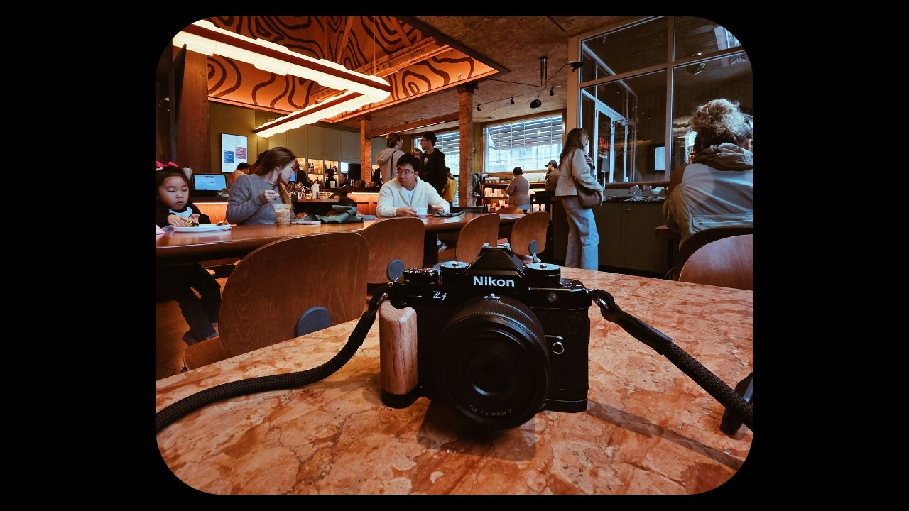
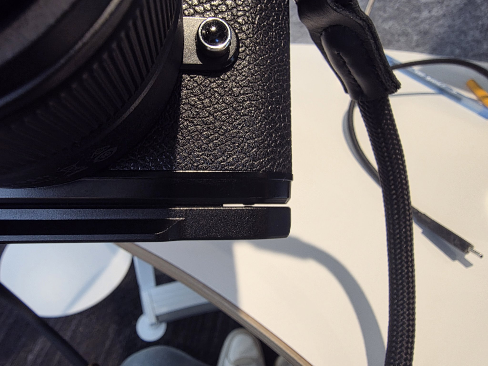
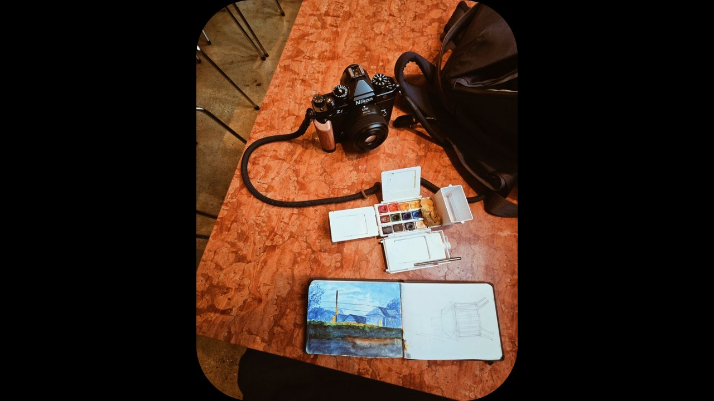

Leftfoto Wood Handgrip for Nikon Zf — Review
In looks it succeeds — the fit and build quality are where it loses points.

The details
- Product
- Leftfoto Wood Handgrip L-Bracket for Nikon Z f, Arca Base, Black
- Bought
- Amazon — $22.37 total
- Materials
- CNC aluminum base with a wood handgrip
- Features
- Arca-Swiss base (slides straight onto an Arca ball head), L-bracket for vertical and horizontal switching, full access to the battery compartment
- On Amazon
- 4.3 stars from 49 ratings, Amazon's Choice
01What is included
The grip, and that is it. They do not include a wrench or something to install it with, but it is easily installed with a coin or a flathead — most people should have something — but it is nice when it is included.
02Why I bought it
I got this one specifically because I wanted that retro look some of the medium format cameras had with their grips/handles — like the Pentax 6x7. Aesthetics is a big driver for a lot of my purchases. I am unfortunately a form-over-function kind of buyer sometimes.
03Pros
In looks it succeeds. I have the black version of this camera, and the black on the grip matches perfectly — that is not the case on every grip. The rosewood really delivers on the retro look I was looking for.
04Cons
Build quality: here is where the grip loses points. It is not made that well. There are gaps where the handle part meets the camera, so there is noticeable movement when you grip the camera. There are gaps on the bottom plate too — although not noticeable from a distance, there are visible gaps between the bottom plate and the grip. The fit is not good at all, and neither is the build quality, so if that is what you are looking for, do not buy. I would not trust this to hold up very well.

That being said, it is cheap — I think I paid 22 USD and change after shipping. For my use cases it is fine. It has quarter mounts for stands, tripods and such at the bottom and a few along the side, for people that are looking to attach accessories. It does what it needs to do, but whether I would trust the security of it as the core of a build system, probably not — not if I am attaching expensive monitors or other accessories. If you are just looking for a walk-around grip, it is not too bad.
05Build and handling
How it feels while shooting: like I mentioned before, it does its job, mostly to look nice, but the grip depth is nice and makes the Nikon Zf a lot more comfortable — other than the noticeable movement because it is not a great fit. But it is not bad enough where it takes me out of shooting, which is what matters.

06Verdict
Overall I give this a 6 out of 10.